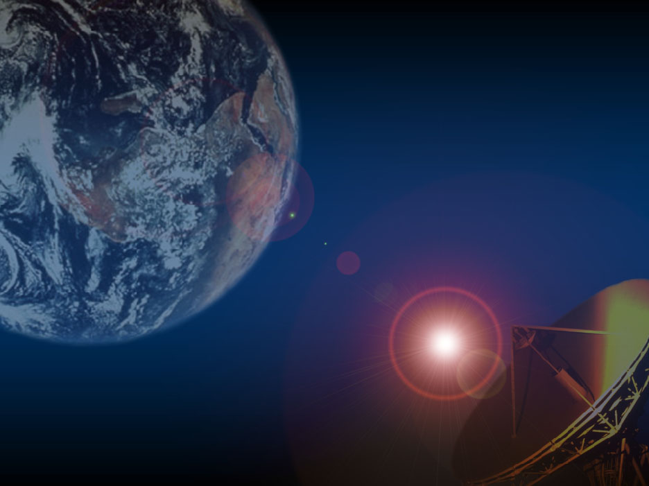
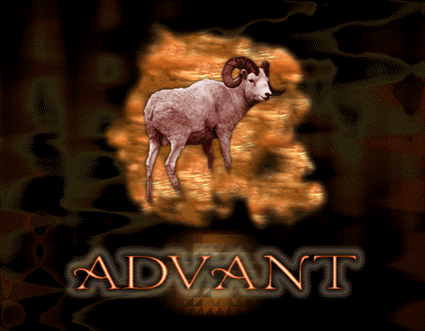
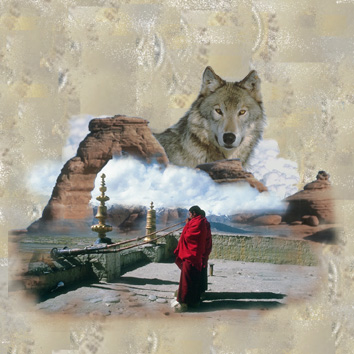

![[LinuxFocus Image]](../../common/March1998/border-short.jpg)
| Noticias Archivos Compañías Consejos |
Fotocomposición gráfica con Photoshoppor Juan Manuel Sepúlveda |
Introducción
Reparando las imágenes escaneadas
Cortando y cortando
Escenas en 3D
Imágenes digitales
Efectos de iluminación finales
IntroducciónEl alto crecimiento de páginas web en el ciberespacio ha generado una gran demanda de diseñadores gráficos. También estamos viviendo en plena revolución de los gráficos 3D, cada día oímos algo sobre un nuevo hardware más impresionante y barato para los ordenadores de usuario. Yo trabajo como diseñador gráfico en España, mi último trabajo implica la mezcla de imágenes escaneadas, tratadas con varios efectos especiales y filtros para mejorar su calidad, con fondos hechos usando algunas aplicaciones comerciales para gráficos en 3D. Hace un par de años estaba muy feliz e impresionando viendo el maravilloso desarrollo de "The Gimp" (un programa de manipulación de imágenes gráficas). Sin embargo en mi trabajo profesional la mayoría de gente usa Photoshop, Illustrator, Extreme3D, 3D Studio, etc... una larga lista de software comercial común en el diseño gráfico y los negocios de publicidad. Hace unas semanas Phil y yo decidimos que sería divertido analizar el estado actual de las herramientas de software libre como Gimp y compararlas con herramientas de publicación populares. Nuestra idea es hacer un "banco de pruebas", en cada número de LinuxFocus describiremos una técnica gráfica común, mostrando cómo se hace con software comercial, como photoshop, y veremos cómo podría hacerse con "The Gimp". Este primer artículo explica una técnica para crear una imágen artificial basada en una fotografía escaneada. Como ejemplo, he hecho una pequeña broma con mi sobrino. Aproposito, soy hermano del editor de LinuxFocus M.A. Sepulveda. Primero te mostrare el resultado final; fué realizado escaneando una fotografía, retocando las tonalidades de color con Photoshop y luego cortandola con una máscara rápida (quick mask). ¡Gotzilla Golpea de nuevo! Reparando las imágenes escaneadasA menudo los escáners cometen errores al capturar el tono azul. La mayor parte del software disponible ofrece herramientas para ver imágenes por canales. En otro caso, puedes comprobar la fidelidad de tu imágen digital haciendo una separación RGB. Viendo el tono azul verás inmediatamente numerosos errores en la imágen escaneada. Más del 50% de las veces estos errores ocurren debido a que la calidad de nuestro escáner no es tan buena como esperabamos o debido a limitaciones hardware y errores en nuestras cámaras digitales.
Es difícil apreciar la cantidad de ruido en la imágen de la derecha si la ves a través del visor web: muchos visores sólo soportan muy poca profundidad de color y resolucíon. No obstante podrás todavía apreciar un deterioro excesivo de la imágen, parece muy ruidosa. Me gustaría explicar paso a paso como reparar esta imágen pues es muy interesante y divertido, sin embargo es mejor que te dirijas a uno de los maestros, Adobe's Creative Director Russell Brown. En la página de trucos de Adobe, hay un amplio número de trucos y técnicas para retocar imágenes digitales; sería una locura por mi parte repetir esos consejos aquí. Cortando y cortando...
Vamos a ver cómo seleccionar la silueta de Daniel: en el modo de edición de máscara rápida selecciona un lápiz y dibuja cuidadosamente una línea alrededor de la silueta, asegurate que la línea es continua en caso contrario te lo troceara por separado después, luego selecciona de la barra de herramientas el cubo de relleno (painting can) y rellena completamente el interior de la silueta, finalmente haz click en el "Edit in Standart Mode" de tu barra de herramientas. ¡Esto es todo amigos!. Todo está seleccionado excepto la región enmascarada. Lo siguiente que tienes que hacer es seleccionar "Select > inverse" para seleccionar a nuestro pequeño amigo. Ahora podemos libremente seleccionar y pegar lo seleccionado sobre cualquier otro sitio. Cuando el corte del objeto seleccionado no es exactamente lo que nosotros queriamos, todavía es posible corregir nuestra selección. Sólo invierte la selección (Select > Invert) para grabar el fondo del objeto. Luego expande el tamaño de la selección en unos cuantos pixels; ¿Cuántos pixels? depende del tamaño de la imágen, practica un poco hasta que lo consigas. Desde el menú Select elegiremos después un tamaño de pluma de unos pocos pixels (otra vez depende del tamaño total de la imágen), normalmente 1 o 2 pixels es suficiente. Ahora que la selección ha sido ajustada podemos borrar el fondo pulsando la tecla "Delete". La silueta resultante tiene ahora una forma difusa y un aura suave y blanca alrededor. El método de selección por modo de edición "Quick Mask" es más preciso y correcto, aunque conlleva más trabajo. Por otro lado no se necesita siempre el uso de esta técnica para seleccionar un objeto, por ejemplo si el color del objeto y el fondo son muy diferentes es suficiente usar la barita mágica o un método basado en selección por color, los cuales son más rápidos y te ahorrarán esfuerzo. Escenas en 3D
Imágenes digitalesSiempre puedes añadir imágenes digitales extras a tu composición. Hay galerías de imágenes que se venden en CDs e incluso toneladas de imagenes en la red (cuidado debes respetar los copyrights apropiados). Insertando imágenes digitales desde galerías en nuestros trabajos podemos dar más fuerza a nuesta composición final, asegurante que el color y luminosidad están bien ajustadas en el trabajo final. Efectos de iluminación finalesUna vez todas nuestras imágenes están cortadas y escaladas para la composición, tenemos que ajustar la escala de colores y la iluminación. Quizás esto es la parte más complicada de cada composición. Las herramientas disponibles para hacerlo son bastante simples: niveles, balance de color, brillo/contraste, Hue/Saturación, ecualización, variaciones entre otros. Echales un pequeño vistazo e intenta comprender qué efecto tienen sobre los colores y tonos. Aquí hay algunas composiciones con unos simples efectos de iluminación:    |
{kind=link}
{kind=link}
{kind=link}
{kind=link}
{kind=link}
{kind=link}
{kind=link}
{kind=link}
{kind=link}
Traducido por Elisa Acosta Muñoz
- Consulta Adobe Tips Page.
- Lee el artículo de Phil Ross en "The Gimp".
Páginas web mantenidas por Miguel A Sepulveda.